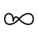

Logo concepts · pick one

Lens (proposed primary). Two arcs forming a vesica piscis — top is inhale, bottom is exhale, the small teal dot is the present breath. Reads as eye, leaf, lens, lung, or breath cycle. Monochrome ink with one signal-teal accent. Replaces the random gradient placeholder. Tell me which to keep and I'll lock it across lockups, OG cover, and the website.